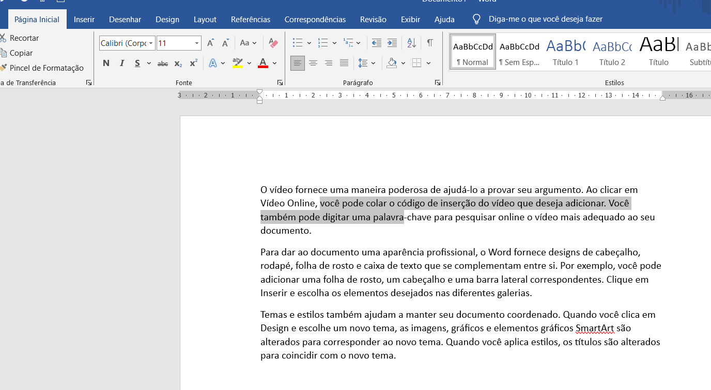
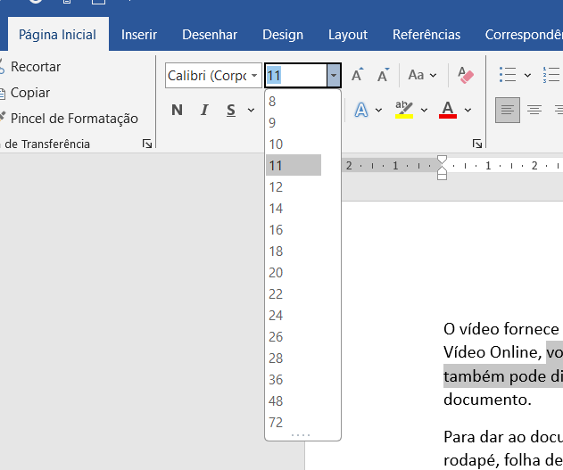
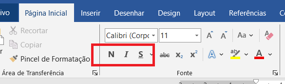
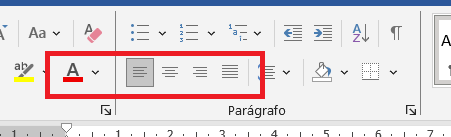

Vamos ver como deixar um texto mais bonito e fácil de ler usando as opções na aba Página Inicial.
Você vai aprender a mudar:

Primeiro, clique e arraste o mouse para selecionar a parte do texto que você quer mudar. Se quiser mudar tudo, use Ctrl+A.

Na aba Página Inicial, no grupo Fonte, clique na lista de tamanhos. Teste 12, 14, 18 e 24 para ver o que fica melhor.
Você também pode digitar o número diretamente na caixa de tamanho.

Na mesma aba, clique nos botões Negrito (B), Itálico (I) e Sublinhar (U). Use atalho: Ctrl+B, Ctrl+I, Ctrl+U.

Use as opções de alinhamento no grupo de Parágrafo(Alinhar a esquerda, Centralizar, Alinhar a Direita e Justificar) para organizar o texto no parágrafo.
Para mudar cor, clique no botão de cor da fonte e escolha a cor desejada. Você pode destacar com cor de marca-texto também.